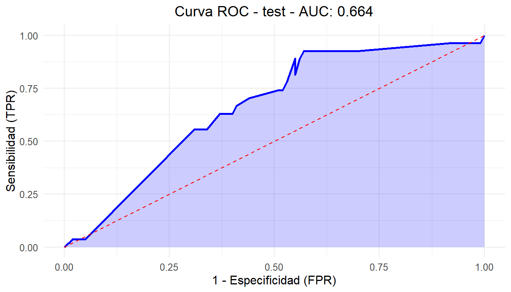

knitr::opts_chunk$set(cache =TRUE, # if TRUE knitr will cache the results to reuse in future knitsfig.width =7, # the width for plots created by code chunkfig.height =4, # the height for plots created by code chunkfig.align ='center', # how to align graphics in the final doc. 'left', 'right', 'center'fig.path ='figs/', # file path to the directory where knitr shall store the graphics filesresults ='asis', # knitr will pass through results without reformatting themecho =TRUE, # in FALSE knitr will not display code in the code chunk above it's resultsmessage =TRUE, # if FALSE knitr will not display any messages generated by codestrip.white =TRUE, # if FALSE knitr will not remove white spaces at the beg or end of code chunkwarning =FALSE) # if FALSE knitr will not display any warning messages in the final document
1 Pre-procesamiento de los datos
1.1 Justificación
Esta sección pretende abordar la etapa más crucial de todo el proceso de Machine Learning (ML), el curado de los datos, también conocido como pre-procesamiento. Este paso no es simplemente un prefacio al modelo predictivo, sino una fase determinante en la construcción de un modelo de aprendizaje automático robusto y eficaz.
El preprocesamiento de datos es esencial para transformar el aprendizaje automático en un proceso analítico y estructurado. Más allá de la mera alimentación de un algoritmo con data crudos, esta fase crítica abarca la limpieza, normalización, transformación y extracción de características necesarias. Estas acciones previas al aprendizaje modelan los datos para minimizar distorsiones y anomalías, preservando la integridad del proceso de aprendizaje y fortaleciendo la precisión de los modelos predictivos resultantes, demostrando que la eficacia del modelo está intrínsecamente ligada a la calidad del preprocesamiento aplicado al conjunto de data original (Obaid, Dheyab, y Sabry 2019).
1.2 Análisis Exploratorio
El fichero de data crudos, facilitado por el Dr. José Manuel Jerez Aragonés, se trata de un fichero .csv con una serie de variables detalladas en la Figura 1.
Figura 1: Descripción de las variables.
Generalmente, se descartarían las variables que no guardan una obvia relevancia clínica con respecto a la variable objetivo (PCR), en este caso, la variable Muestra. Antes de eliminar esta variable, se puede observar que hay diferentes caracteres comunes a las muestras de varios pacientes, estos caracteres representan el estudio al que pertenece el dato, y esto sí que puede tener importancia clínica, ya que podría ayudarnos a comprender si los pacientes de un estudio determinado guardan algún tipo de relación estadística, introduciendo así un posible sesgo en los data cuya fuerza dependerá de la cantidad de pacientes de ese estudio concreto. Es por esto que se va a crear la variable Estudio.
Finalmente, se guardarán en un vector las variables cateóricas, y en otro, las numéricas. Este bloque se código se repetirá varias veces durante la limpieza de data, ya que la naturaleza de algunas variables puede cambiar.
Se puede apreciar una pequeña cantidad de valores indefinidos (I). Estos serán imputados con la moda. Adicionalmente, podemos observar que las clases principales de esta variable están muy desbalanceadas, por lo que en un futuro tal vez se debe tomar una decisión sobre si estos data pueden llegar a aportar algo a las conclusiones del proyecto.
La cantidad de muestras en T0 es demasiado baja, debido a esto, para que tengan algo de significancia, se combinarán con las de T1 para crear la nueva clase, T0-T1.
Código
# | echo: false# | message: false# | warning: false# | error: falsedata <- data %>%mutate(`Estadio`=recode(`Estadio`,`T0`="T1"))data <- data %>%mutate(`Estadio`=recode(`Estadio`,`T1`="T0-T1"))
Podemos observar que el criterio de clasificación ha marcado el tipo de estudio en otros para la mayoría de muestras. Se tendrá en cuenta este dato para futuros análisis.
Adicionalmente, se codificará la variable Grado como categórica con la finalidad de no dar más importancia a valores de grado más alto.
El conjunto de datos solo contiene dos variables numéricas, Edad y PCR. Para poder realmente sacar una conclusión de este apartado, he considerado que podría ser interesante comprobar si la distirbución de estas variables se mantiene similar independientemente del estudio llevado a cabo. Esto podría a comprender
# | label: fig-dist-estudio-edad# | fig.cap: "Distribución de la variable 'Edad' con respecto a 'Estudio'"# | out.width: '80%'# | fig.align: 'center'ggplot(data, aes(x = Estudio, y = Edad, fill = Estudio)) +geom_boxplot() +labs(title ="Distribución de Edad por Estudio",x ="Estudio",y ="Edad") +theme_minimal() +theme(legend.position ="none")
En el gráfico de barras generado en la parte superior podemos observar que la distribución de la variable edad se mantiene a lo largo de los estudios. No hay ningún estudio incluído en el conjunto de datos que presente un sesgo desmedido en esta variable. Se pueden observar aún así una cantidad razonable de valores atípicos en los grupos M y otros, sin embargo, podemos atribuir esto a que son los dos conjuntos más grandes, así que es más probable que haya algún error humano en estos; no se prestará atención ya que esos valores atípicos no parecen estar fuera de lo clínicamente razonable en el contexto de este estudio (edades por debajo de 100 o por encima de 10).
Código
# | label: fig-dist-estudio-edad# | fig.cap: "Distribución de la variable 'Edad' con respecto a 'Estudio'"# | out.width: '80%'# | fig.align: 'center'# | warning: false# | message: false# | echo: falsedf_summary <- data %>%filter(!is.na(PCR)) %>%group_by(Estudio) %>%summarise(Proporcion =mean(PCR ==1, na.rm =TRUE)) ggplot(df_summary, aes(x = Estudio, y = Proporcion, fill = Estudio)) +geom_bar(stat ="identity") +labs(title ="Proporción de valores positivos de PCR por Estudio",x ="Estudio",y ="Proporción de PCR positivos") +theme_minimal() +theme(legend.position ="none", axis.text.x =element_text(angle =45, hjust =1))
Podemos observar que el 50% de valores positivos de PCR se encuentran en los gripos LBJ y otros. Los 3 grupos restantes se dividen el resto de muestras positivas casi equitativamente, con una clara carencia de valores positivos en el grupo Spain.
1.3 Limpieza de Datos: Valores faltantes
Los valores faltantes son un rasgo común de la mayoría de conjuntos de datos clínicos, la introducción de estos puede deberse a errores humanos o incertidumbres en los resultados de pruebas que tengan representación en los datos. La imputación de valores faltantes ayuda a prevenir sesgos y suprime la dificultad de tratar con valores no-numéricos (Donders et al. 2006)
Código
# | label: na_val# | fig.cap: "Valores Faltantes"# | out.width: '80%'# | fig.align: 'center'# | warning: false# | message: false# | echo: falsecalc_na_val <-function(df) { na_val <-sapply(df, function(columna) { (sum(is.na(columna)) *100) /nrow(df) }) na_data <-data.frame(columna =names(na_val), na_count = na_val) na_data <- na_data[na_data$na_count >0, ]return(na_data)}plot_na_vals <-function(na_values) {# Ahora, usamos 'na_data_filtrada' en ggplotggplot(na_values, aes(x = columna, y = na_count)) +geom_bar(stat ="identity", fill ="blue") +# Usamos barras azules para mostrar el conteo de NA'stheme_minimal() +# Aplicamos un tema minimalista para la gráficalabs(title ="Valores NA por Columna con NA > 0", # Título de la gráficax ="Columna", # Etiqueta del eje xy ="Número de Valores NA (%)") +# Etiqueta del eje ytheme(axis.text.x =element_text(angle =45, hjust =1)) +ylim(0, 100)}na_data <-calc_na_val(data)na_data_pre <- na_dataplot_na_vals(na_data_pre)
Como podemos observar en la figura generada por el código superior, este conjunto de datos no es la excepción. Las variables Grado, Her2, REst y RPro son categóricas, por lo que serán imputadas por la moda, por otra parte, la variable target PCR es una variable binaria numérica, por lo que será imputada por la mediana de la columna.
Código
imputar_valores <-function(df, columna) { moda <-function(x) { valores_unicos <-unique(x) valores_unicos[which.max(tabulate(match(x, valores_unicos)))] }# Imputar basándose en si la columna es numérica o categóricaif (is.numeric(df[[columna]])) {# Usar la mediana para imputar valores faltantes en columnas numéricas df[[columna]][is.na(df[[columna]])] <-median(df[[columna]], na.rm =TRUE) } else {# Usar la moda para imputar valores faltantes en columnas categóricas df[[columna]][is.na(df[[columna]])] <-moda(df[[columna]][!is.na(df[[columna]])]) }return(df)}df_imputado <- datafor (columna inc(numericas, categoricas)) { df_imputado <-imputar_valores(df_imputado, columna) }na_data <-calc_na_val(df_imputado)plot_na_vals(na_data)
Podemos observar que los datos han sido imputados con éxito.
1.4 Resultados y Discusión
La pipeline programada ad-hoc para el pre-procesamiento de estos datos es simple, pero cumple con su propósito. Terminamos con un dataset sin valores faltantes ni redundantes y con las variables necesarias para poder construir un modelo predictivo sólido.
Código
knitr::kable(head(df_imputado, 10))
Edad
REst
RPro
Her2
Estadio
NodAfec
Grado
Fenotipo
PCR
Estudio
37.8
P
P
N
T2
N1
II
LumA
0
otros
45.8
P
P
N
T3
N1
II
Normal
0
otros
40.7
N
N
N
T3
N0
III
Basal
0
otros
40.8
N
N
N
T2
N1
III
Basal
1
otros
35.5
P
P
N
T3
N1
II
LumA
0
otros
52.2
N
N
N
T4
N0
III
Basal
0
otros
38.2
N
N
N
T2
N0
III
Basal
0
otros
54.2
P
N
N
T3
N1
III
LumA
0
otros
46.6
N
N
N
T3
N3
III
Basal
0
otros
40.8
P
P
P
T4
N3
II
LumA
0
otros
2 Modelo Predictivo: Regresión Logística
2.1 Evaluación Inicial
En el desarrollo de modelos predictivos, es fundamental adoptar un enfoque que permita evaluar de manera precisa y confiable el rendimiento del modelo propuesto. Se empleará un enfoque inicial que involucra la construcción de un modelo de regresión logística utilizando el conjunto completo de datos, esta decisión metodológica permite capturar una visión integral de las tendencias y patrones subyacentes sin la segmentación previa en conjuntos de entrenamiento y prueba. Al utilizar todo el conjunto de datos, buscamos evaluar la capacidad del modelo para aprender y predecir dentro del mismo contexto de los datos disponibles, reconociendo que este paso constituye solo la etapa inicial de un proceso de evaluación más exhaustivo.
Mediante predicciones se realizará el cálculo de métricas clave como la precisión, exactitud (accuracy) y sensibilidad (recall), se pretende obtener una primera estimación del rendimiento del modelo.
En la salida del bloque de código superior podemos observar la matriz de confusión de la evaluación inicial del modelo.
Apoyándonos en la matriz de confusión y en las métricas generadas en el bloque de código superior podemos concluir:
El conjunto de datos está desbalanceado. La medida recall nos permite saber cuántos aciertos ha tenido el modelo sobre la cantidad total de clases positivas que recibió de entrada. Al tener un recall bajo, significa que el modelo reconoce mejor la salida PCR=0, esto es un indicador de que el modelo está sesgado a etiquetar las muestras como la clase PCR=0, seguramente porque hay muchas más muestras de esta clase que de PCR=1 (Metástasis).
El modelo no predice bien las muestas positivas. La medida precision nos permite saber cuántas muestras positivas realmente lo eran sobre la cantidad total de muestras clasificadas como positivas por el modelo. Esto nos permite saber si el modelo está capacitado para poder clasificar bien una muestra positiva cuando la detecta.
La solución al problema del punto 1 sería introducir algún método de validación cruzada que mantenga el balance de clases positivas y negativas durante el entrenamiento (Stratified K-Folding) o una aumentación de datos a favor de la clase positiva (oversampling), incluso una combinación de ambos podría ser beneficiosa. La solución al problema del punto 2 sería emplear técnicas de selección de características para el entrenamiento del modelo con la finalidad de encontrar la combinación de variables que le permita al algoritmo identificar, y clasificar correctamente las muestras positivas.
La medida Accuracy se presenta algo engañosa en este caso, ya que hay una gran cantidad de verdaderos negativos (TN) en la matriz de confusión. Por otra parte, el F1-Score es un representante de las medidas precision y recall.
2.2 Selección de características
Como se ha comentado anteriormente, la manera más efectiva de aumentar la medida Precision de nuestro modelo es realizando una búsqueda de características que aumenten la capacidad del modelo para poder clasificar correctamente una muestra positiva cuando la identifica. Este proceso se hará manualmente con un análisis de asociación y luego se aplicará un algoritmo stepwise.
2.2.1 Análisis de Asociación
Como se ha comentado anteriormente, la selección de características es una etapa importante en el desarrollo de modelos predictivos, ya que las variables incorrectas pueden introducir ruido y desviar la precisión del modelo. Este análisis se presentará visualmente y se archivará detalladamente, proporcionando una base transparente y empírica para la inclusión o exclusión de características.
Código
source("./calculaPValor.R")resultados <-aplicaCalculaPValorATodosLosPares(df_imputado)ultimo_plot <-ggplot(resultados, aes(x = VariableX, y = VariableY, fill = Valor)) +geom_tile(color ="white") +geom_text(aes(label =sprintf("%.2g", Valor)), size =3, color ="black", vjust ="inward") +scale_fill_gradient(low ="white", high ="red", limits =c(0, 1), name ="P-valor") +labs(title ="Heatmap de P-valores", x ="Variable X", y ="Variable Y") +theme_minimal() +theme(axis.text.x =element_text(angle =45, hjust =1, vjust =1),axis.text.y =element_text(angle =45, hjust =1, vjust =1),axis.title.x =element_text(size =14),axis.title.y =element_text(size =14),plot.title =element_text(hjust =0.5),plot.margin =margin(t =1, r =1, b =1, l =1, unit ="cm")) ultimo_plot
Observando entonces la figura superior, podemos concluir que las variables Fenotipo, Grado, REst y RPro parecen guardar una significancia estadística fuerte con la variable objetivo, PCR, por lo que son excelentes candidatas para componer un modelo. Se procederá entonces a contrastar la matriz de confusión del modelo entrenado con todas las variables y el modelo entrenado solo con estas.
Matriz de Confusión del modelo con características seleccionadas
Matriz del Confusión del modelo con características seleccionadas y algoritmo stepwise aplicado
2.3 Validación Interna
La validación interna recoge las diferentes técnicas que existen para la división del conjunto de datos en subconjuntos con la finalidad de entrenar, validar, y probar el modelo en datos para asegurar la precisión y eficacia de este. Esta división suele realizarse en 3 subconjuntos, el de entrenamiento (train), validación (val) y prueba (test). El subconjunto de entrenamiento sirve para ajustar los hiperparámetros internos del modelo a los datos, el de validación sirve para comprobar si el modelo está ajustado lo suficiente como para producir resultados fiables, y el de test se utiliza para simular qué resultados muestra el modelo al introducir datos nunca visto, imitando un caso en el que el modelo sea lanzado para poder utilizarse en algún negocio.
Hay diferentes métodos de validación interna, y, como se menciona en (Roelofs et al. 2019), todos mejoran en una medida u otra el rendimiento del modelo, ya sea reduciendo el overfitting o underfitting, sin embargo, muchas veces la aplicación se uno u otro se ve limitada por la capacidad del cómputo del equipo
Habiendo creado entonces los conjuntos de entrenamiento, validación y prueba, se va a proceder a programar una función que reciba los índices generados aleatoriamente para mostrar la distribución de la variable objetivo en los diferentes subconjuntos.
Código
plot_distribution <-function(df, target, indices) {# Obtener los conjuntos de datos basados en los índices sets <-holdout_sets(df, indices) pcr_distribution <-lapply(sets, function(set) table(set[[target]]))# Crear un data.frame para visualización df_vis <-data.frame(Group =rep(c("Train", "Validation", "Test"), each =2),PCR =rep(c("0", "1"), 3),Count =unlist(lapply(pcr_distribution, function(x) c(x['0'], x['1']))) )# Generar el gráfico de barrasggplot(df_vis, aes(fill = PCR, y = Count, x = Group)) +geom_bar(position ="dodge", stat ="identity") +labs(x ="Conjunto", y ="Cantidad de muestras", fill =paste(target, "Value", sep=" ")) +theme_minimal() +scale_fill_manual(values =c("0"="skyblue", "1"="salmon")) +geom_text(aes(label = Count), position =position_dodge(width =0.9), vjust =-0.25)}plot_distribution(df = df_imputado,target="PCR",indices = splits_indices)
Como podemos observar, el desbalance de las clases de la variable PCR es evidente. En ninguno de los subconjuntos generados se ha conseguido llegar como mínimo al 50% de muestras de PCR=1 sobre la cantidad de PCR=0. Este desbalance se hará entonces evidente en las medidas de precision y recall. La medida precision tendrá un valor bajo por la pobre cantidad de muestras PCR=1, haciendo que las que el modelo identifique, las clasifique mal. Recall, por otra parte, tendrá un valor bajo, ya que el modelo no conseguirá distinguir las clases PCR=1 de PCR=0 por el sesgo introducido debido al desbalance de datos.
2.3.1.2 Rendimiento del modelo mediante el método HoldOut
Podemos evidenciar este comportamiento observando las matrices de confusión resultantes de evaluar el modelo para cada conjunto de datos, siendo entrenado solo con el conjunto de entrenamiento.
Código
evaluate_model <-function(df, target_name, indices_list, threshold =0.5) {# Separar los conjuntos de datos usando los índices splits <-holdout_sets(df, indices_list)# Ajustar el modelo glm con el conjunto de entrenamiento formula_glm <-as.formula(paste(target_name, "~ Fenotipo + Grado + REst + RPro")) model <-glm(formula_glm, data = splits$train, family =binomial())# Inicializar una lista para almacenar los resultados results <-list()# Para cada conjunto (train, validation, test), calcular la matriz de confusión y métricasfor (set_name innames(splits)) {# Extraer el conjunto de datos actual set <- splits[[set_name]] predicciones <-predict(model, newdata = set, type ="response") predicciones_truncadas <-ifelse(predicciones < threshold, 0, 1) results[[paste(set_name, "conf_mat", sep ="_")]] <-plot_confMat(predicciones_truncadas, set[[target_name]])# Calcular y almacenar métricas metrics <-calcular_metricas(set[[target_name]], predicciones_truncadas) results[[paste(set_name, "metrics", sep ="_")]] <- metrics } results[["test_target_distribution"]] <-table(splits$test[[target_name]])return(results)}results <-evaluate_model(df_imputado, "PCR", splits_indices, threshold =0.5)
De esta forma hemos podido obtener las matrices de confusión del modelo, así como las métricas de rendimiento para cada subconjunto de datos. Para poder evaluar estas dos medidas y su coherencia con lo anteriormente estimado, podemos representar gráficamente ambos resultados:
Código
compare_metrics_graphically <-function(metrics_list) { metrics_df <-do.call(rbind, lapply(names(metrics_list), function(set_name) { set_metrics <- metrics_list[[set_name]] set_metrics$Set <-gsub("_metrics", "", set_name) return(set_metrics) })) metrics_df$Set <-factor(metrics_df$Set, levels =c("train", "validation", "test"))# Usar ggplot para crear el gráfico de barrasggplot(metrics_df, aes(x = Metric, y = Value, fill = Set)) +geom_bar(stat ="identity", position =position_dodge(width =0.7)) +labs(title ="Comparación de Métricas de Modelo por Conjunto",x ="Métrica", y ="Valor") +theme_minimal() +scale_fill_brewer(palette ="Dark2") +theme(axis.text.x =element_text(angle =45, hjust =1))}metrics_list <-list(train_metrics = results$train_metrics,validation_metrics = results$validation_metrics,test_metrics = results$test_metrics)results$test_metrics
El valor de precisión obtenido en entrenamiento no es significativo sin tener en cuenta el bajo valor de recall. Un ejemplo similar pero más extremo ocurre con el conjunto de test. Para una explicación más detallada, consultar ConfMat test.
Código
print(results$validation_conf_mat)
Código
print(results$test_conf_mat)

Apoyándonos en la gráfica de las medidas de rendimiento para cada conjunto de datos, podemos concluir que el valor de precisión perfecto para el conjunto de test es algo engañoso, ya que hay muy pocas muestras positivas para PCR, pero de estas pocas muestras (12), las que han sido identificadas como PCR=1 por el modelo (2) han sido correctamente clasificadas (Verdadero Positivo).
Esto queda evidenciado también en la medida de recall, que es baja ya que de 12 muestras PCR positivas, el modelo ha clasificado como PCR=0 10 de ellas (Falso Negativo).
Como podemos observar, la hipótesis de partida se ha comprobado, el método HoldOut ha mejorado los resultados con respecto a nuestra evaluación inicial sin la división del conjunto. La precisión y el recall han aumentado ligeramente, concordando con las limitaciones que se mencionaron anteriormente, la medida accuracy sigue siendo engañosa sobre la verdadera eficacia del modelo para poder clasificar correctamente las muestras. El conjunto de test, al ser tan pequeño y tan desbalanceado, es poco representativo.
Esta faceta engañosa de la medida de accuracy y la facilidad en la que la medida F1-Score puede ser muy cercana a cero cuando no hay datos suficientes justifica la necesidad de introducir una nueva medida para la evaluación de nuestro modelo. La curva Receiver Operating Characteristic (ROC) y el Area Under the Curve (AUC).
2.3.2 Curva ROC
La curva ROC representa la Sensibilidad (tasa de verdaderos positivos) frente a 1-Especificidad (tasa de falsos positivos) del modelo para diferentes umbrales (thresholds). Esta curva tiene asociada una medida, el Área Bajo la Curva (AUC), que representa el área encerrada bajo la curva ROC. Matemáticamente, se puede demostrar que este área tendrá un valor entre 0 y 1, siendo 1 un indicativo de un clasificador perfecto, 0.5 el rendimiento de un clasificador aleatorio, y un valor menor a 0.5 podría indicar que las predicciones están desacertadas respecto a las etiquetas verdaderas, pero al invertir las decisiones del clasificador, se obtendría un modelo con un rendimiento mejor que el aleatorio.
Código
plot_roc_curve <-function(df, target_name, indices_list, set_name) {# Separar los conjuntos de datos usando los índices splits <-holdout_sets(df, indices_list)# Verificar si el nombre del conjunto es válidoif (!set_name %in%c("train", "validation", "test")) {stop("El nombre del conjunto debe ser 'train', 'validation' o 'test'.") }# Seleccionar dinámicamente el conjunto basado en el nombre proporcionado selected_set <- splits[[set_name]]# Ajustar el modelo glm con el conjunto de entrenamiento formula_glm <-as.formula(paste(target_name, "~ Fenotipo + Grado + REst + RPro")) model <-glm(formula_glm, data = splits$train, family =binomial())# Hacer predicciones en el conjunto seleccionado predicciones <-predict(model, newdata = selected_set, type ="response")# Calcular TPR y FPR para varios umbrales target <- selected_set[[target_name]] tpr <- fpr <-numeric()for(threshold inseq(0, 1, by =0.01)) { predicciones_truncadas <-ifelse(predicciones > threshold, 1, 0) TP <-sum(predicciones_truncadas ==1& target ==1) TN <-sum(predicciones_truncadas ==0& target ==0) FP <-sum(predicciones_truncadas ==1& target ==0) FN <-sum(predicciones_truncadas ==0& target ==1) tpr[length(tpr) +1] <- TP / (TP + FN) fpr[length(fpr) +1] <- FP / (FP + TN) }# Calcular el AUC aproximado auc <-sum((fpr[-length(fpr)] - fpr[-1]) * (tpr[-length(tpr)] + tpr[-1])) /2# Graficar la curva ROCplot(fpr, tpr, type ="l", col ="red", xlab ="1-Especificidad (FPR)", ylab ="Sensibilidad (TPR)",main =paste("Curva ROC - Conjunto de", set_name, "\nAUC =", round(auc, 3)))abline(0, 1, lty =2)}
Podemos afirmar que un modelo tiene un mejor rendimiento si su AUC se acerca a 1, sin embargo, la curva ROC puede darnos información adicional. Si observamos las gráficas generadas para conjunto de datos, podemos observar que el mejor AUC lo tiene el conjunto de train, esto tiene sentido, ya que estamos evaluando el modelo con el mismo conjunto con el que ha sido entrenado, por lo que esta gráfica no es muy representativa.
Se puede observar también que parece que hay valores para los que la Sensibilidad y la Especifidad son 1 ambos, cosa que puede parecer muy positiva, porque tendríamos un clasificador perfecto, sin embargo, lo que está pasando es que estamos poniendo un umbral tan alto que el modelo no está clasificando ninguna muestra como PCR=1, haciendo que haya un TPR y FPR perfectos, pero engañosos.
En el contexto de modelos orientados a ser ejecutados en conjuntos de datos clínicos, es crucial considerar el costo de los falsos positivos y falsos negativos. No es lo mismo diagnosticar a un paciente para luego descubrir que no estaba enfermo que diagnosticarlo como sano y descubrir que, realmente, estaba enfermo. Por lo tanto, es esencial seleccionar un umbral bajo para obtener una decente tasa de verdaderos positivos, sacrificando tener una razonable tasa de falsos positivos.
Basándonos en estas consideraciones, podemos concluir que utilizaremos un umbral de 0.35 para la evaluación de los siguientes modelos. Este umbral busca equilibrar la sensibilidad y especificidad en función de las necesidades específicas de este proyecto y el contexto clínico, maximizando la utilidad de los modelos en aplicaciones clínicas reales.
3 Referencias
Donders, A. Rogier T., Geert J. M. G. van der Heijden, Theo Stijnen, y Karel G. M. Moons. 2006. «Review: A gentle introduction to imputation of missing values». Journal of Clinical Epidemiology 59 (10): 1087-91. https://doi.org/https://doi.org/10.1016/j.jclinepi.2006.01.014.
Obaid, Hadeel S., Saad Ahmed Dheyab, y Sana Sabah Sabry. 2019. «The Impact of Data Pre-Processing Techniques and Dimensionality Reduction on the Accuracy of Machine Learning», 279-83. https://doi.org/10.1109/IEMECONX.2019.8877011.
Roelofs, Rebecca, Vaishaal Shankar, Benjamin Recht, Sara Fridovich-Keil, Moritz Hardt, John Miller, y Ludwig Schmidt. 2019. «A Meta-Analysis of Overfitting in Machine Learning». En Advances in Neural Information Processing Systems, editado por H. Wallach, H. Larochelle, A. Beygelzimer, F. dAlché-Buc, E. Fox, y R. Garnett. Vol. 32. Curran Associates, Inc. https://proceedings.neurips.cc/paper_files/paper/2019/file/ee39e503b6bedf0c98c388b7e8589aca-Paper.pdf.
Ejecutar el código
---title: "Modelado Predictivo: Cáncer de Mama"author: "Mario Pascual González"format: html: theme: light: flatly dark: darkly highlight-style: monokai # Monokai también funciona bien en temas oscuros toc: true toc-depth: 3 toc-title: "Contenidos" toc-float: collapsed: false smooth-scroll: true toc_scroll: true number-sections: true code-fold: true code-tools: source: true toggle: true caption: "Expand Code" html-math-method: katex bibliography: references.bib lang: es other-links: - text: LinkedIn icon: linkedin href: 'https://www.linkedin.com/in/mario-pascual-gonzalez/' - text: Correo Electrónico icon: envelope href: "mailto:mario.pg02@gmail.com?subject=Contacto desde el informe de Modelado Predictivo" - text: Perfil de Github icon: github href: 'https://github.com/MarioPasc' code-links: - text: Repositorio del Informe icon: file-code href: 'https://github.com/MarioPasc/Modelado-Predictivo-Cancer-de-Mama-R'---```{r setup}#| output: false#| echo: false#| warning: falselibrary(glmnet)library(caret)library(readxl)library(readr)library(ggplot2)library(dplyr)library(broom)library(DT)library(tidyverse)library(reshape2)library(MASS)data <- read.csv(file = "data_p1.csv", sep = ";", dec=",")``````{r global.options, include = TRUE}knitr::opts_chunk$set( cache = TRUE, # if TRUE knitr will cache the results to reuse in future knits fig.width = 7, # the width for plots created by code chunk fig.height = 4, # the height for plots created by code chunk fig.align = 'center', # how to align graphics in the final doc. 'left', 'right', 'center' fig.path = 'figs/', # file path to the directory where knitr shall store the graphics files results = 'asis', # knitr will pass through results without reformatting them echo = TRUE, # in FALSE knitr will not display code in the code chunk above it's results message = TRUE, # if FALSE knitr will not display any messages generated by code strip.white = TRUE, # if FALSE knitr will not remove white spaces at the beg or end of code chunk warning = FALSE) # if FALSE knitr will not display any warning messages in the final document```# Pre-procesamiento de los datos## JustificaciónEsta sección pretende abordar la etapa más crucial de todo el proceso de *Machine Learning* (ML), el curado de los datos, también conocido como pre-procesamiento. Este paso no es simplemente un prefacio al modelo predictivo, sino una fase determinante en la construcción de un modelo de aprendizaje automático robusto y eficaz. El preprocesamiento de datos es esencial para transformar el aprendizaje automático en un proceso analítico y estructurado. Más allá de la mera alimentación de un algoritmo con data crudos, esta fase crítica abarca la limpieza, normalización, transformación y extracción de características necesarias. Estas acciones previas al aprendizaje modelan los datos para minimizar distorsiones y anomalías, preservando la integridad del proceso de aprendizaje y fortaleciendo la precisión de los modelos predictivos resultantes, demostrando que la eficacia del modelo está intrínsecamente ligada a la calidad del preprocesamiento aplicado al conjunto de data original [@8877011]. ## Análisis ExploratorioEl fichero de data crudos, facilitado por el Dr. José Manuel Jerez Aragonés, se trata de un fichero `.csv` con una serie de variables detalladas en la @fig-desccol.{#fig-desccol fig-align="center"}Generalmente, se descartarían las variables que no guardan una obvia relevancia clínica con respecto a la variable objetivo (**PCR**), en este caso, la variable **Muestra**. Antes de eliminar esta variable, se puede observar que hay diferentes caracteres comunes a las muestras de varios pacientes, estos caracteres representan el estudio al que pertenece el dato, y esto sí que puede tener importancia clínica, ya que podría ayudarnos a comprender si los pacientes de un estudio determinado guardan algún tipo de relación estadística, introduciendo así un posible sesgo en los data cuya fuerza dependerá de la cantidad de pacientes de ese estudio concreto. Es por esto que se va a crear la variable **Estudio**.```{r}#| label: Variable Estudiodata$Estudio <-ifelse(grepl("^PERU", data$Muestra), "PERU",ifelse(grepl("^MDA", data$Muestra), "MDA",ifelse(grepl("^LBJ", data$Muestra), "LBJ",ifelse(grepl("^Spain", data$Muestra), "Spain",ifelse(grepl("^M", data$Muestra), "M", "otros")))))data$Muestra <-NULL```Finalmente, se guardarán en un vector las variables cateóricas, y en otro, las numéricas. Este bloque se código se repetirá varias veces durante la limpieza de data, ya que la naturaleza de algunas variables puede cambiar. ```{r}#| label: categoricas y numericasnumericas <-colnames(data)[sapply(data, is.numeric)]categoricas <-colnames(data)[!colnames(data) %in% numericas]```### Exploración de variables categóricas```{r}obtener_estadisticas_categoricas <-function(data, variable) {# Calcular frecuencias frecuencias <-table(data[[variable]])# Calcular porcentajes porcentajes <-prop.table(frecuencias) *100# Crear un data.frame con los resultados estadisticas_df <-data.frame(Categoria =names(frecuencias),Frecuencia =as.integer(frecuencias),Porcentaje =round(porcentajes, 2) )return(estadisticas_df)}graficar_barras_categoricas <-function(estadisticas_df, variable) {# Generar gráfico de barras usando ggplot2 p <-ggplot(estadisticas_df, aes(x = Categoria, y = Frecuencia, fill = Categoria)) +geom_bar(stat ="identity") +theme_minimal() +labs(title =paste("Distribución de la variable", variable),x = variable,y ="Frecuencia") +theme(axis.text.x =element_text(angle =45, hjust =1))return(p)}# Aplicar la función a cada variable categórica y almacenar los resultadosresultados <-lapply(categoricas, function(var) obtener_estadisticas_categoricas(data, var))```::: {.panel-tabset}## REst```{r}# | echo: false# | message: false# | warning: false# | error: falsegraficar_barras_categoricas(resultados[[1]], categoricas[1])```Se puede apreciar una pequeña cantidad de valores indefinidos (*I*). Estos serán imputados con la moda. ```{r}# | echo: false# | message: false# | warning: false# | error: falsedata <- data %>%mutate(`REst`=recode(`REst`,`I`=NA_character_))```## RPro```{r}# | echo: false# | message: false# | warning: false# | error: falsegraficar_barras_categoricas(resultados[[2]], categoricas[2])```Se puede apreciar una pequeña cantidad de valores indefinidos (*I*). Estos serán imputados con la moda. ```{r}# | echo: false# | message: false# | warning: false# | error: falsedata <- data %>%mutate(`RPro`=recode(`RPro`,`I`=NA_character_))```## Her2```{r}# | echo: false# | message: false# | warning: false# | error: falsegraficar_barras_categoricas(resultados[[3]], categoricas[3])```Se puede apreciar una pequeña cantidad de valores indefinidos (*I*). Estos serán imputados con la moda. Adicionalmente, podemos observar que las clases principales de esta variable están muy desbalanceadas, por lo que en un futuro tal vez se debe tomar una decisión sobre si estos data pueden llegar a aportar algo a las conclusiones del proyecto. ```{r}# | echo: false# | message: false# | warning: false# | error: falsedata <- data %>%mutate(`Her2`=recode(`Her2`,`I`=NA_character_))```## Estadio```{r}# | echo: false# | message: false# | warning: false# | error: falsegraficar_barras_categoricas(resultados[[4]], categoricas[4])```La cantidad de muestras en *T0* es demasiado baja, debido a esto, para que tengan algo de significancia, se combinarán con las de *T1* para crear la nueva clase, *T0-T1*. ```{r}# | echo: false# | message: false# | warning: false# | error: falsedata <- data %>%mutate(`Estadio`=recode(`Estadio`,`T0`="T1"))data <- data %>%mutate(`Estadio`=recode(`Estadio`,`T1`="T0-T1"))```## NodAfec```{r}# | echo: false# | message: false# | warning: false# | error: falsegraficar_barras_categoricas(resultados[[5]], categoricas[5])```Los data de la variable *NodAfec* parecen estar en orden. ## Fenotipo```{r}# | echo: false# | message: false# | warning: false# | error: falsegraficar_barras_categoricas(resultados[[6]], categoricas[6])```Los data de la variable *Fenotipo* parecen estar en orden. ## Estudio```{r}# | echo: false# | message: false# | warning: false# | error: falsegraficar_barras_categoricas(resultados[[7]], categoricas[7])```Podemos observar que el criterio de clasificación ha marcado el tipo de estudio en *otros* para la mayoría de muestras. Se tendrá en cuenta este dato para futuros análisis. ## GradoAdicionalmente, se codificará la variable *Grado* como categórica con la finalidad de no dar más importancia a valores de grado más alto. ```{r}# | echo: false# | message: false# | warning: false# | error: falsedata$Grado <-as.character(data$Grado)data <- data %>%mutate(`Grado`=recode(`Grado`,`1`="I",`2`="II",`3`="III"))```:::Finalmente, se actualizará la lista de variables categóricasy numéricas, además de recodificar las variables a tipo *factor*. ```{r}# | echo: false# | message: false# | warning: false# | error: falsenumericas <-colnames(data)[sapply(data, is.numeric)]categoricas <-colnames(data)[!colnames(data) %in% numericas]for(columna in categoricas) { data[[columna]] <-as.factor(data[[columna]])}```### Exploración de variables numéricasEl conjunto de datos solo contiene dos variables numéricas, *Edad* y *PCR*. Para poder realmente sacar una conclusión de este apartado, he considerado que podría ser interesante comprobar si la distirbución de estas variables se mantiene similar independientemente del estudio llevado a cabo. Esto podría a comprender ::: {.panel-tabset}## Edad y Estudio```{r}# | label: fig-dist-estudio-edad# | fig.cap: "Distribución de la variable 'Edad' con respecto a 'Estudio'"# | out.width: '80%'# | fig.align: 'center'ggplot(data, aes(x = Estudio, y = Edad, fill = Estudio)) +geom_boxplot() +labs(title ="Distribución de Edad por Estudio",x ="Estudio",y ="Edad") +theme_minimal() +theme(legend.position ="none")```En el gráfico de barras generado en la parte superior podemos observar que la distribución de la variable edad se mantiene a lo largo de los estudios. No hay ningún estudio incluído en el conjunto de datos que presente un sesgo desmedido en esta variable. Se pueden observar aún así una cantidad razonable de valores atípicos en los grupos *M* y *otros*, sin embargo, podemos atribuir esto a que son los dos conjuntos más grandes, así que es más probable que haya algún error humano en estos; no se prestará atención ya que esos valores atípicos no parecen estar fuera de lo clínicamente razonable en el contexto de este estudio (edades por debajo de 100 o por encima de 10). ## PCR y Estudio```{r}# | label: fig-dist-estudio-edad# | fig.cap: "Distribución de la variable 'Edad' con respecto a 'Estudio'"# | out.width: '80%'# | fig.align: 'center'# | warning: false# | message: false# | echo: falsedf_summary <- data %>%filter(!is.na(PCR)) %>%group_by(Estudio) %>%summarise(Proporcion =mean(PCR ==1, na.rm =TRUE)) ggplot(df_summary, aes(x = Estudio, y = Proporcion, fill = Estudio)) +geom_bar(stat ="identity") +labs(title ="Proporción de valores positivos de PCR por Estudio",x ="Estudio",y ="Proporción de PCR positivos") +theme_minimal() +theme(legend.position ="none", axis.text.x =element_text(angle =45, hjust =1))```Podemos observar que el 50% de valores positivos de *PCR* se encuentran en los gripos *LBJ* y *otros*. Los 3 grupos restantes se dividen el resto de muestras positivas casi equitativamente, con una clara carencia de valores positivos en el grupo *Spain*. :::## Limpieza de Datos: Valores faltantesLos valores faltantes son un rasgo común de la mayoría de conjuntos de datos clínicos, la introducción de estos puede deberse a errores humanos o incertidumbres en los resultados de pruebas que tengan representación en los datos. La imputación de valores faltantes ayuda a prevenir sesgos y suprime la dificultad de tratar con valores no-numéricos [@DONDERS20061087]```{r}# | label: na_val# | fig.cap: "Valores Faltantes"# | out.width: '80%'# | fig.align: 'center'# | warning: false# | message: false# | echo: falsecalc_na_val <-function(df) { na_val <-sapply(df, function(columna) { (sum(is.na(columna)) *100) /nrow(df) }) na_data <-data.frame(columna =names(na_val), na_count = na_val) na_data <- na_data[na_data$na_count >0, ]return(na_data)}plot_na_vals <-function(na_values) {# Ahora, usamos 'na_data_filtrada' en ggplotggplot(na_values, aes(x = columna, y = na_count)) +geom_bar(stat ="identity", fill ="blue") +# Usamos barras azules para mostrar el conteo de NA'stheme_minimal() +# Aplicamos un tema minimalista para la gráficalabs(title ="Valores NA por Columna con NA > 0", # Título de la gráficax ="Columna", # Etiqueta del eje xy ="Número de Valores NA (%)") +# Etiqueta del eje ytheme(axis.text.x =element_text(angle =45, hjust =1)) +ylim(0, 100)}na_data <-calc_na_val(data)na_data_pre <- na_dataplot_na_vals(na_data_pre)```Como podemos observar en la figura generada por el código superior, este conjunto de datos no es la excepción. Las variables *Grado, Her2, REst y RPro* son categóricas, por lo que serán imputadas por la **moda**, por otra parte, la variable target *PCR* es una variable binaria numérica, por lo que será imputada por la **mediana** de la columna. ```{r}imputar_valores <-function(df, columna) { moda <-function(x) { valores_unicos <-unique(x) valores_unicos[which.max(tabulate(match(x, valores_unicos)))] }# Imputar basándose en si la columna es numérica o categóricaif (is.numeric(df[[columna]])) {# Usar la mediana para imputar valores faltantes en columnas numéricas df[[columna]][is.na(df[[columna]])] <-median(df[[columna]], na.rm =TRUE) } else {# Usar la moda para imputar valores faltantes en columnas categóricas df[[columna]][is.na(df[[columna]])] <-moda(df[[columna]][!is.na(df[[columna]])]) }return(df)}df_imputado <- datafor (columna inc(numericas, categoricas)) { df_imputado <-imputar_valores(df_imputado, columna) }na_data <-calc_na_val(df_imputado)plot_na_vals(na_data)```Podemos observar que los datos han sido imputados con éxito. ## Resultados y DiscusiónLa pipeline programada ad-hoc para el pre-procesamiento de estos datos es simple, pero cumple con su propósito. Terminamos con un dataset sin valores faltantes ni redundantes y con las variables necesarias para poder construir un modelo predictivo sólido. ```{r}knitr::kable(head(df_imputado, 10))```# Modelo Predictivo: Regresión Logística## Evaluación InicialEn el desarrollo de modelos predictivos, es fundamental adoptar un enfoque que permita evaluar de manera precisa y confiable el rendimiento del modelo propuesto. Se empleará un enfoque inicial que involucra la construcción de un **modelo de regresión logística** utilizando el conjunto completo de datos, esta decisión metodológica permite capturar una visión integral de las tendencias y patrones subyacentes sin la segmentación previa en conjuntos de entrenamiento y prueba. Al utilizar todo el conjunto de datos, buscamos evaluar la capacidad del modelo para aprender y predecir dentro del mismo contexto de los datos disponibles, reconociendo que este paso constituye solo la etapa inicial de un proceso de evaluación más exhaustivo.```{r, warning=FALSE}target <- df_imputado$PCRdata <- df_imputado[, !names(df_imputado) %in% "PCR"]lr_model <- glm(PCR ~ ., data=df_imputado, family="binomial")predicciones <- predict(lr_model, type = "response")pred <- data.frame( y_true = target, y_pred = predicciones)threshold = 0.5predicciones_truncadas_inicial <- ifelse(predicciones < threshold, 0, 1)```Mediante predicciones se realizará el cálculo de métricas clave como la precisión, exactitud (accuracy) y sensibilidad (recall), se pretende obtener una primera estimación del rendimiento del modelo. ```{r, label=confMat1, echo=FALSE}plot_confMat <- function(predicciones_truncadas, target) { TP <- sum(predicciones_truncadas == 1 & target == 1) TN <- sum(predicciones_truncadas == 0 & target == 0) FP <- sum(predicciones_truncadas == 1 & target == 0) FN <- sum(predicciones_truncadas == 0 & target == 1) df <- data.frame( TClass = factor(rep(c("0", "1"), times = c(2, 2))), # Clase verdadera PClass = factor(rep(c("0", "1", "0", "1"), each = 1)), # Clase predicha Y = c(TN, FP, FN, TP) # Frecuencias para TN, FP, FN, TP respectivamente ) conf_mat <- ggplot(data = df, mapping = aes(x = TClass, y = PClass)) + geom_tile(aes(fill = Y), colour = "white") + geom_text(aes(label = sprintf("%1.0f", Y)), vjust = 1) + scale_fill_gradient(low = "white", high = "red") + theme_bw() + theme(legend.position = "none", axis.title.x = element_blank(), axis.title.y = element_blank(), axis.text.x = element_text(angle = 45, vjust = 1)) return(conf_mat)}plot_confMat(predicciones_truncadas_inicial, target)```En la salida del bloque de código superior podemos observar la matriz de confusión de la evaluación inicial del modelo. ```{r}calcular_metricas <-function(target, predicciones_truncadas) { TP <-sum(predicciones_truncadas ==1& target ==1) TN <-sum(predicciones_truncadas ==0& target ==0) FP <-sum(predicciones_truncadas ==1& target ==0) FN <-sum(predicciones_truncadas ==0& target ==1) Accuracy <- (TP + TN) / (TP + TN + FN + FP) Precision <- TP / (TP + FP) Recall <- TP / (TP + FN) F1score <- (2* Precision * Recall) / (Precision + Recall) df_medidas <-data.frame(Metric =c("Accuracy", "Precision", "Recall", "F1 Score"),Value =c(Accuracy, Precision, Recall, F1score) )return(df_medidas)}calcular_metricas(target, predicciones_truncadas_inicial)```Apoyándonos en la matriz de confusión y en las métricas generadas en el bloque de código superior podemos concluir:1. **El conjunto de datos está desbalanceado**. La medida *recall* nos permite saber cuántos aciertos ha tenido el modelo sobre la cantidad total de clases positivas que recibió de entrada. Al tener un recall bajo, significa que el modelo reconoce mejor la salida *PCR=0*, esto es un indicador de que el modelo está sesgado a etiquetar las muestras como la clase *PCR=0*, seguramente porque hay muchas más muestras de esta clase que de *PCR=1* (Metástasis). 2. **El modelo no predice bien las muestas positivas**. La medida *precision* nos permite saber cuántas muestras positivas realmente lo eran sobre la cantidad total de muestras clasificadas como positivas por el modelo. Esto nos permite saber si el modelo está capacitado para poder clasificar bien una muestra positiva cuando la detecta. La solución al problema del punto 1 sería introducir algún método de **validación cruzada** que mantenga el balance de clases positivas y negativas durante el entrenamiento (*Stratified K-Folding*) o una **aumentación de datos** a favor de la clase positiva (oversampling), incluso una combinación de ambos podría ser beneficiosa. La solución al problema del punto 2 sería emplear técnicas de selección de características para el entrenamiento del modelo con la finalidad de encontrar la combinación de variables que le permita al algoritmo identificar, y clasificar correctamente las muestras positivas. La medida *Accuracy* se presenta algo engañosa en este caso, ya que hay una gran cantidad de verdaderos negativos (TN) en la matriz de confusión. Por otra parte, el *F1-Score* es un representante de las medidas precision y recall. ## Selección de característicasComo se ha comentado anteriormente, la manera más efectiva de aumentar la medida *Precision* de nuestro modelo es realizando una búsqueda de características que aumenten la capacidad del modelo para poder clasificar correctamente una muestra positiva cuando la identifica. Este proceso se hará manualmente con un análisis de asociación y luego se aplicará un algoritmo *stepwise*.### Análisis de AsociaciónComo se ha comentado anteriormente, la selección de características es una etapa importante en el desarrollo de modelos predictivos, ya que las variables incorrectas pueden introducir ruido y desviar la precisión del modelo. Este análisis se presentará visualmente y se archivará detalladamente, proporcionando una base transparente y empírica para la inclusión o exclusión de características. ```{r, label=asociacion, fig.width=9, fig.height=6}source("./calculaPValor.R")resultados <- aplicaCalculaPValorATodosLosPares(df_imputado)ultimo_plot <- ggplot(resultados, aes(x = VariableX, y = VariableY, fill = Valor)) + geom_tile(color = "white") + geom_text(aes(label = sprintf("%.2g", Valor)), size = 3, color = "black", vjust = "inward") + scale_fill_gradient(low = "white", high = "red", limits = c(0, 1), name = "P-valor") + labs(title = "Heatmap de P-valores", x = "Variable X", y = "Variable Y") + theme_minimal() + theme(axis.text.x = element_text(angle = 45, hjust = 1, vjust = 1), axis.text.y = element_text(angle = 45, hjust = 1, vjust = 1), axis.title.x = element_text(size = 14), axis.title.y = element_text(size = 14), plot.title = element_text(hjust = 0.5), plot.margin = margin(t = 1, r = 1, b = 1, l = 1, unit = "cm")) ultimo_plot```Observando entonces la figura superior, podemos concluir que las variables `Fenotipo`, `Grado`, `REst` y `RPro` parecen guardar una significancia estadística fuerte con la variable objetivo, `PCR`, por lo que son excelentes candidatas para componer un modelo. Se procederá entonces a contrastar la matriz de confusión del modelo entrenado con todas las variables y el modelo entrenado solo con estas. ### Modelo ajustado ```{r}lr_model_ajustado <-glm(PCR ~ Fenotipo + Grado + REst + RPro, data=df_imputado, family="binomial")predicciones <-predict(lr_model_ajustado, type ="response")pred <-data.frame(y_true = target,y_pred = predicciones)threshold =0.5predicciones_truncadas_ajustado <-ifelse(predicciones < threshold, 0, 1)```### Conclusión```{r}#| layout-ncol: 2#| fig-cap: #| - "Matriz de Confusión del modelo con características seleccionadas"#| - "Matriz del Confusión del modelo con características seleccionadas y algoritmo stepwise aplicado"plot_confMat(predicciones_truncadas_inicial, target)plot_confMat(predicciones_truncadas_ajustado, target)```## Validación InternaLa validación interna recoge las diferentes técnicas que existen para la división del conjunto de datos en subconjuntos con la finalidad de entrenar, validar, y probar el modelo en datos para asegurar la precisión y eficacia de este. Esta división suele realizarse en 3 subconjuntos, el de entrenamiento (*train*), validación (*val*) y prueba (*test*). El subconjunto de entrenamiento sirve para ajustar los hiperparámetros internos del modelo a los datos, el de validación sirve para comprobar si el modelo está ajustado lo suficiente como para producir resultados fiables, y el de test se utiliza para simular qué resultados muestra el modelo al introducir datos nunca visto, imitando un caso en el que el modelo sea lanzado para poder utilizarse en algún negocio. Hay diferentes métodos de validación interna, y, como se menciona en [@NEURIPS2019_ee39e503], todos mejoran en una medida u otra el rendimiento del modelo, ya sea reduciendo el *overfitting* o *underfitting*, sin embargo, muchas veces la aplicación se uno u otro se ve limitada por la capacidad del cómputo del equipo ### Hold-Out```{r}holdout_split <-function(df, validation_size, test_size) {# Calcular tamaños de los conjuntos total_rows <-nrow(df) validation_rows <-round(total_rows * validation_size) test_rows <-round(total_rows * test_size)# Crear índices aleatoriosset.seed(42) indices <-sample(1:total_rows, total_rows)# Asignar índices a cada conjunto validation_indices <- indices[1:validation_rows] test_indices <- indices[(validation_rows +1):(validation_rows + test_rows)] train_indices <- indices[(validation_rows + test_rows +1):total_rows]return(list(train = train_indices, validation = validation_indices, test = test_indices))}holdout_sets <-function(df, indices) { train_set <- df[indices$train, ] validation_set <- df[indices$validation, ] test_set <- df[indices$test, ]return(list(train = train_set, validation = validation_set, test = test_set))}splits_indices =holdout_split(df = df_imputado,validation_size = .2,test_size = .15)splits =holdout_sets(df = df_imputado, indices=splits_indices)train_set = splits[1]val_set = splits[2]test_set = splits[3]```#### Evaluación HoldOutHabiendo creado entonces los conjuntos de entrenamiento, validación y prueba, se va a proceder a programar una función que reciba los índices generados aleatoriamente para mostrar la distribución de la variable objetivo en los diferentes subconjuntos. ```{r}plot_distribution <-function(df, target, indices) {# Obtener los conjuntos de datos basados en los índices sets <-holdout_sets(df, indices) pcr_distribution <-lapply(sets, function(set) table(set[[target]]))# Crear un data.frame para visualización df_vis <-data.frame(Group =rep(c("Train", "Validation", "Test"), each =2),PCR =rep(c("0", "1"), 3),Count =unlist(lapply(pcr_distribution, function(x) c(x['0'], x['1']))) )# Generar el gráfico de barrasggplot(df_vis, aes(fill = PCR, y = Count, x = Group)) +geom_bar(position ="dodge", stat ="identity") +labs(x ="Conjunto", y ="Cantidad de muestras", fill =paste(target, "Value", sep=" ")) +theme_minimal() +scale_fill_manual(values =c("0"="skyblue", "1"="salmon")) +geom_text(aes(label = Count), position =position_dodge(width =0.9), vjust =-0.25)}plot_distribution(df = df_imputado,target="PCR",indices = splits_indices)```Como podemos observar, el desbalance de las clases de la variable `PCR` es evidente. En ninguno de los subconjuntos generados se ha conseguido llegar como mínimo al 50% de muestras de `PCR=1` sobre la cantidad de `PCR=0`. Este desbalance se hará entonces evidente en las medidas de precision y recall. La medida precision tendrá un valor bajo por la pobre cantidad de muestras `PCR=1`, haciendo que las que el modelo identifique, las clasifique mal. Recall, por otra parte, tendrá un valor bajo, ya que el modelo no conseguirá distinguir las clases `PCR=1` de `PCR=0` por el sesgo introducido debido al desbalance de datos. #### Rendimiento del modelo mediante el método HoldOutPodemos evidenciar este comportamiento observando las matrices de confusión resultantes de evaluar el modelo para cada conjunto de datos, siendo entrenado solo con el conjunto de entrenamiento. ```{r, warning=FALSE}evaluate_model <- function(df, target_name, indices_list, threshold = 0.5) { # Separar los conjuntos de datos usando los índices splits <- holdout_sets(df, indices_list) # Ajustar el modelo glm con el conjunto de entrenamiento formula_glm <- as.formula(paste(target_name, "~ Fenotipo + Grado + REst + RPro")) model <- glm(formula_glm, data = splits$train, family = binomial()) # Inicializar una lista para almacenar los resultados results <- list() # Para cada conjunto (train, validation, test), calcular la matriz de confusión y métricas for (set_name in names(splits)) { # Extraer el conjunto de datos actual set <- splits[[set_name]] predicciones <- predict(model, newdata = set, type = "response") predicciones_truncadas <- ifelse(predicciones < threshold, 0, 1) results[[paste(set_name, "conf_mat", sep = "_")]] <- plot_confMat(predicciones_truncadas, set[[target_name]]) # Calcular y almacenar métricas metrics <- calcular_metricas(set[[target_name]], predicciones_truncadas) results[[paste(set_name, "metrics", sep = "_")]] <- metrics } results[["test_target_distribution"]] <- table(splits$test[[target_name]]) return(results)}results <- evaluate_model(df_imputado, "PCR", splits_indices, threshold = 0.5)```De esta forma hemos podido obtener las matrices de confusión del modelo, así como las métricas de rendimiento para cada subconjunto de datos. Para poder evaluar estas dos medidas y su coherencia con lo anteriormente estimado, podemos representar gráficamente ambos resultados:```{r}compare_metrics_graphically <-function(metrics_list) { metrics_df <-do.call(rbind, lapply(names(metrics_list), function(set_name) { set_metrics <- metrics_list[[set_name]] set_metrics$Set <-gsub("_metrics", "", set_name) return(set_metrics) })) metrics_df$Set <-factor(metrics_df$Set, levels =c("train", "validation", "test"))# Usar ggplot para crear el gráfico de barrasggplot(metrics_df, aes(x = Metric, y = Value, fill = Set)) +geom_bar(stat ="identity", position =position_dodge(width =0.7)) +labs(title ="Comparación de Métricas de Modelo por Conjunto",x ="Métrica", y ="Valor") +theme_minimal() +scale_fill_brewer(palette ="Dark2") +theme(axis.text.x =element_text(angle =45, hjust =1))}metrics_list <-list(train_metrics = results$train_metrics,validation_metrics = results$validation_metrics,test_metrics = results$test_metrics)results$test_metricscompare_metrics_graphically(metrics_list)```::: {.panel-tabset}## ConfMat Train```{r}print(results$train_conf_mat)```El valor de precisión obtenido en entrenamiento no es significativo sin tener en cuenta el bajo valor de recall. Un ejemplo similar pero más extremo ocurre con el conjunto de test. Para una explicación más detallada, consultar `ConfMat test`. ## ConfMat Validation```{r}print(results$validation_conf_mat)```## ConfMat Test```{r}print(results$test_conf_mat)```Apoyándonos en la gráfica de las medidas de rendimiento para cada conjunto de datos, podemos concluir que el valor de precisión perfecto para el conjunto de test es algo engañoso, ya que hay muy pocas muestras positivas para PCR, pero de estas pocas muestras (12), las que han sido identificadas como `PCR=1` por el modelo (2) han sido correctamente clasificadas (Verdadero Positivo). Esto queda evidenciado también en la medida de recall, que es baja ya que de 12 muestras PCR positivas, el modelo ha clasificado como `PCR=0` 10 de ellas (Falso Negativo). :::Como podemos observar, la hipótesis de partida se ha comprobado, el método HoldOut ha mejorado los resultados con respecto a nuestra evaluación inicial sin la división del conjunto. La precisión y el recall han aumentado ligeramente, concordando con las limitaciones que se mencionaron anteriormente, la medida accuracy sigue siendo engañosa sobre la verdadera eficacia del modelo para poder clasificar correctamente las muestras. El conjunto de test, al ser tan pequeño y tan desbalanceado, es poco representativo. Esta faceta engañosa de la medida de accuracy y la facilidad en la que la medida F1-Score puede ser muy cercana a cero cuando no hay datos suficientes justifica la necesidad de introducir una **nueva medida** para la evaluación de nuestro modelo. La curva **Receiver Operating Characteristic (ROC)** y el **Area Under the Curve (AUC)**. ### Curva ROCLa curva ROC representa la Sensibilidad (tasa de verdaderos positivos) frente a 1-Especificidad (tasa de falsos positivos) del modelo para diferentes umbrales (thresholds). Esta curva tiene asociada una medida, el Área Bajo la Curva (AUC), que representa el área encerrada bajo la curva ROC. Matemáticamente, se puede demostrar que este área tendrá un valor entre 0 y 1, siendo 1 un indicativo de un clasificador perfecto, 0.5 el rendimiento de un clasificador aleatorio, y un valor menor a 0.5 podría indicar que las predicciones están desacertadas respecto a las etiquetas verdaderas, pero al invertir las decisiones del clasificador, se obtendría un modelo con un rendimiento mejor que el aleatorio.```{r, warning=FALSE}plot_roc_curve <- function(df, target_name, indices_list, set_name) { # Separar los conjuntos de datos usando los índices splits <- holdout_sets(df, indices_list) # Verificar si el nombre del conjunto es válido if (!set_name %in% c("train", "validation", "test")) { stop("El nombre del conjunto debe ser 'train', 'validation' o 'test'.") } # Seleccionar dinámicamente el conjunto basado en el nombre proporcionado selected_set <- splits[[set_name]] # Ajustar el modelo glm con el conjunto de entrenamiento formula_glm <- as.formula(paste(target_name, "~ Fenotipo + Grado + REst + RPro")) model <- glm(formula_glm, data = splits$train, family = binomial()) # Hacer predicciones en el conjunto seleccionado predicciones <- predict(model, newdata = selected_set, type = "response") # Calcular TPR y FPR para varios umbrales target <- selected_set[[target_name]] tpr <- fpr <- numeric() for(threshold in seq(0, 1, by = 0.01)) { predicciones_truncadas <- ifelse(predicciones > threshold, 1, 0) TP <- sum(predicciones_truncadas == 1 & target == 1) TN <- sum(predicciones_truncadas == 0 & target == 0) FP <- sum(predicciones_truncadas == 1 & target == 0) FN <- sum(predicciones_truncadas == 0 & target == 1) tpr[length(tpr) + 1] <- TP / (TP + FN) fpr[length(fpr) + 1] <- FP / (FP + TN) } # Calcular el AUC aproximado auc <- sum((fpr[-length(fpr)] - fpr[-1]) * (tpr[-length(tpr)] + tpr[-1])) / 2 # Graficar la curva ROC plot(fpr, tpr, type = "l", col = "red", xlab = "1-Especificidad (FPR)", ylab = "Sensibilidad (TPR)", main = paste("Curva ROC - Conjunto de", set_name, "\nAUC =", round(auc, 3))) abline(0, 1, lty = 2)}```::: {.panel-tabset}## ROC Train```{r}plot_roc_curve(df_imputado, "PCR", splits_indices, "train")```## ROC Validation```{r}plot_roc_curve(df_imputado, "PCR", splits_indices, "validation")```## ROC Test```{r}plot_roc_curve(df_imputado, "PCR", splits_indices, "test")```:::Podemos afirmar que un modelo tiene un mejor rendimiento si su AUC se acerca a 1, sin embargo, la curva ROC puede darnos información adicional. Si observamos las gráficas generadas para conjunto de datos, podemos observar que el mejor AUC lo tiene el conjunto de train, esto tiene sentido, ya que estamos evaluando el modelo con el mismo conjunto con el que ha sido entrenado, por lo que esta gráfica no es muy representativa. Se puede observar también que parece que hay valores para los que la Sensibilidad y la Especifidad son 1 ambos, cosa que puede parecer muy positiva, porque tendríamos un clasificador perfecto, sin embargo, lo que está pasando es que estamos poniendo un umbral tan alto que el modelo no está clasificando ninguna muestra como `PCR=1`, haciendo que haya un TPR y FPR perfectos, pero engañosos. En el contexto de modelos orientados a ser ejecutados en conjuntos de datos clínicos, es crucial considerar el costo de los falsos positivos y falsos negativos. No es lo mismo diagnosticar a un paciente para luego descubrir que no estaba enfermo que diagnosticarlo como sano y descubrir que, realmente, estaba enfermo. Por lo tanto, es esencial seleccionar un umbral bajo para obtener una decente tasa de verdaderos positivos, sacrificando tener una razonable tasa de falsos positivos.Basándonos en estas consideraciones, podemos concluir que utilizaremos un umbral de 0.35 para la evaluación de los siguientes modelos. Este umbral busca equilibrar la sensibilidad y especificidad en función de las necesidades específicas de este proyecto y el contexto clínico, maximizando la utilidad de los modelos en aplicaciones clínicas reales.# Referencias::: {#refs}:::